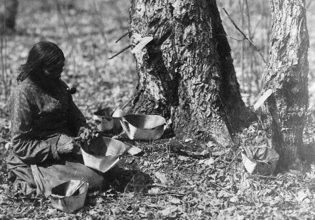

Sugar Bushes is a group of maple trees used for collecting the sap to boil into syrup. Each spring, during Moon of the Boiling Sap, known as Iskigamizige-giizis in the Ojibwe languge, Ojibwe families would return to the same stand of maple trees where they had established sugar bush camps. The right time to start tapping maple trees is when the days are above freezing and the nights are still freezing. In the old days, the families had a lodge on the camp site and a storehouse that kept many of their supplies. They would often have a food cache they’d restock in the fall for the next spring. Upon arrival to the camp, the men would hunt and fish while women tapped the maple trees. Some sugar camps have been in the same family for many generations.
